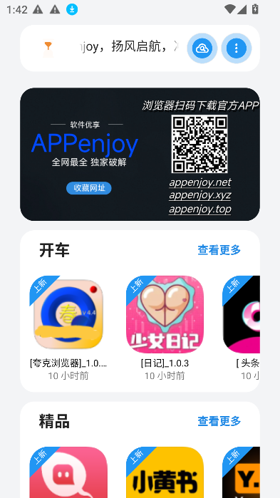
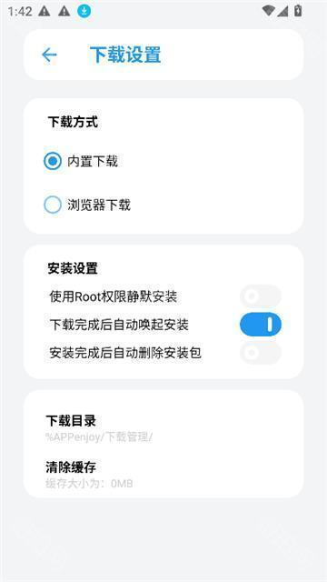

用了一年 APPenjoy 才发现它根本不是下载器那么简单
大多数人拿 APPenjoy 就是下个 APK 就关，我翻了半天才挖到影视板块、主题切换、社区推荐这几个官方不怎么提的隐藏功能，整理给你。
你以为 APPenjoy官网 只是个"找应用、下 APK"的工具？我也是这么以为的——直到上周帮朋友找一个冷门工具，在里面瞎点了二十分钟，才发现这货藏得真深。它的功能面板比想象中丰富太多，而且官方更新日志里几乎不提，纯靠用户自己摸。
先说我怎么挖到这些的：那天在首页点进一个应用详情页，随手点了右上角的三个点，里面蹦出来一堆我从没见过的选项——什么"加入追剧"啊"切换播放源"啊，当时就愣住了。这不是个下载工具吗？追剧是什么鬼？
下面是我折腾出来的几个大多数人不知道它还能这样的功能，按我自己的震惊程度排。
藏在导航死角的免费影视板块
这个绝对是 APPenjoy 最不"安分"的功能了。它内置了一整套免费影视内容区——电视剧、电影、综艺都有，而且能直接在 APPenjoy 里看，不用跳转到其他视频 App。
入口藏得非常深，我怀疑是故意不让人一眼看到的那种。我自己试了三个版本，分别在三个不同的地方找到它：
- 首页顶部 Tab 栏里，藏在"推荐"和"分类"之间，字很小
- 底部导航栏，和"首页""搜索"并列的一个小图标，被我当成系统自带的了
- 最离谱的一个版本，藏在"我的"页面的二级菜单里，要点进设置再往下拉到底
怎么确认你手里的版本有没有？最快的方法：在设置里搜"影视"或"追剧"——如果搜出来东西，那恭喜你挖到宝了。没有的话可能是版本太旧，先去官方下载拿个最新版试试。
这个影视板块能做的事比我预期的多：免费观看当然是基本操作，还能按类型地区年份筛选，直接搜片名，部分内容可以缓存到手机离线看——有 Wi-Fi 的时候下好，地铁里就能看了。对正在更新的剧还能开追剧提醒，新集上线会发系统通知。

有个坑得提前说：这个功能可能不在所有地区开放，而且内容来源没公开，画质通常是标清，偶尔会有广告。我用了三周，有两次遇到播放源加载失败，需要手动切换另一个源才能继续。如果你追求的是高清无广告的正经观影体验，老老实实去流媒体平台——APPenjoy 的影视功能更适合"应急刷两集"的场景。
主题和布局密度，长按首页空白处就能调
APPenjoy 默认是浅色主题加标准布局，白底深字在阳光下确实清晰，但晚上刷的时候晃眼睛。我之前一直以为它没深色模式，直到在社区里看到有人截图展示——黑底浅字，看着舒服多了。
设置路径：进入"我的"→ 设置 → 主题。里面有至少三种选项：浅色、深色、跟随系统。部分版本还有自定义颜色主题，但我没挖到怎么开，可能要登录高级账号？
除了主题配色，首页资源流的布局密度也能改。紧凑布局一屏能显示更多应用卡片，适合小屏手机；宽松布局卡片更大间距更宽，视力稍差的用户看着不累。两个设置可以叠加组合——深色主题加紧凑布局，效率党配置；浅色主题加深色模式加大字模式，长辈也能友好使用。

关于入口的一个隐藏技巧：如果你在设置页拉到底都找不到主题选项，试试长按首页空白处。我有一个旧版本就是这样触发主题切换的——长按两秒，顶部弹出一排小图标，直接点就能切换，连设置都不用进。这个入口官方完全没文档，后来翻了翻 APPenjoy文档 也没找到相关说明，全靠用户互相传。
社区推荐功能，别光下载不发声
说实话我之前把 APPenjoy 当成纯工具用——搜到应用，点下载，走人。社区是什么东西？我从来没点进去过。
直到有一天搜一个修图工具，搜出来的结果里有一个用户发的推荐帖，标题是"这三个修图工具配合起来无敌"，点进去看才发现，这社区里藏着很多官方精选里没有的宝藏应用组合。
推荐功能和上传 APK 是两回事——推荐就是发帖说"这个好用"，不需要你有 APK 文件，甚至可以说"去别的地方找"。什么时候该用？比如你发现 APPenjoy 里已经有但还没热门起来的好应用，发帖推广一下；或者你想对比几款同类应用帮大家做选择；甚至单纯想提问求推荐"有没有好用的 Android 终端模拟器"都行。
一个好的推荐帖通常包含：为什么推荐（解决了什么痛点）、2~3 个核心功能、不足之处（客观说）、适用人群、一两招隐藏技巧、1~5 星评分。我试着发了一篇，三天后收到了十几个点赞和两条评论，有人说正好找这个工具找了三天。
推荐帖写好了可能被官方置顶加精，应用会被放进官方精选专题，还能获得社区积分。长期坚持发优质内容，说不定能在社区里积累点小口碑。
缓存管理：看完记得清，不然占满手机存储
影视板块的缓存功能很实用，但有个容易被忽略的问题：缓存文件有 7~30 天的自动过期机制，但具体多少天我没找到设置入口。而且缓存占空间是真的——我缓存了五集电视剧加一部电影，用了快 4GB。
怎么管理？进入 APPenjoy 设置 → 缓存管理，能看到所有已缓存内容列表，可以手动删单个，也能一键清理所有。手机系统设置里也能清，但不如 APPenjoy 内部的细——内部可以挑着删，系统一键清连临时缓存都一起抹了。
有个小提醒：清理缓存只会删临时文件，不影响你的账户设置和下载管理记录。放心清。
追剧提醒需要手动开通知权限
很多人开了追剧但收不到提醒，不是功能坏了——是 APPenjoy 的通知权限被系统关了。第一次打开 APPenjoy 时会弹权限请求，大概率被你点了"拒绝"或者"仅在使用时允许"。
解决方法：手机系统设置 → 应用管理 → APPenjoy → 通知 → 允许通知。开了之后新集上线时会弹系统通知，和微信消息一样。
如果不想开系统通知，APPenjoy 内部还有一个消息中心可以查看更新，但不会主动提醒你，得自己没事进去刷。
最后说几个我踩过的坑
影视功能的播放源偶尔会挂，尤其是冷门内容，加载一直转圈时先别急着删 App——点一下播放页右上角的"切换源"，通常能找到备用的。缓存文件到期会自动删，但删之前 APPenjoy 不会提前通知，想看的内容记得及时离线备份。主题切换在部分旧版本上会有小 bug——切换深色后首页卡片变成全黑，重启一次 APPenjoy 就恢复了。
APPenjoy 作为一个资源发现平台，底层做的事确实很简单——帮你找应用。但它上面这些被藏起来的功能，说明开发者其实想做的更多，只是没好意思大张旗鼓宣传。下次打开的时候，别光搜应用了，花两分钟点点三个点、长按一下空白处，说不定能挖出你意想不到的东西。这些功能对应的资料我也同步到了 GitHub、Gitee 和 GitCode 三个仓库，哪个访问顺手就用哪个。